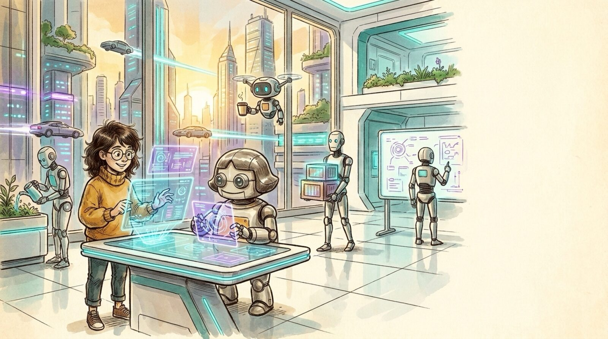

<section id="p13" data-transition="fade" style="background:#f5eee0">
  
  <h1 id="p5d6b085dad6br0-8b6e3b1d" style="position:absolute; top:867.31px; left:1238.56px; width:1920px; font-family:Arial, sans-serif; font-size:72px; font-weight:700; line-height:1.1; color:#222222">So what is the&nbsp;<br>future of SWE?</h1>
  <aside>Section: so where does software engineering end up? The answer starts with a house, but first: the future office, robots everywhere.</aside>
</section>
